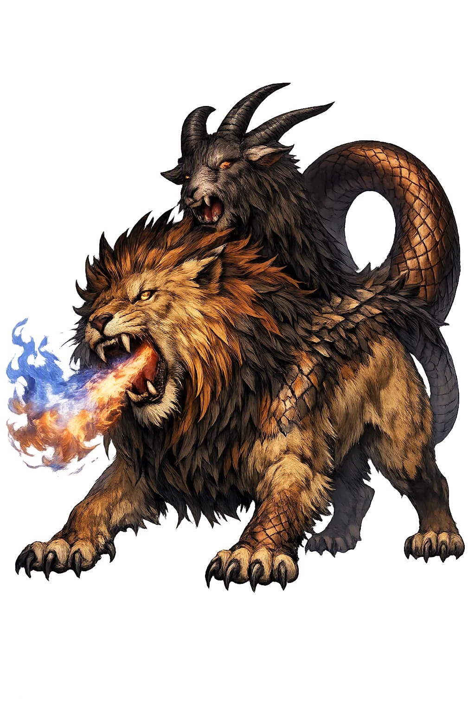

Chímaira through the eyes of sculptors, painters, and craftsmen across the ages

Chimera of Arezzo — Etruscan bronze, c. 400 BC, unearthed in 1553. Wounded but unconquered, the lion-bodied monster twists against Bellerophon's blow, her goat head still hissing defiance — a votive gift inscribed TINSCVIL to the sky-god Tin. Museo Archeologico Nazionale, Florence.

Pelike G535 — Attic red-figure pelike, c. 440 BC. Bellerophon leans from Pegasus' back to drive his spear into the Chimaira, the moment Greek painters chose again and again: the impossible beast made killable. Louvre, Paris.

Chimaera Painter plate — Middle Corinthian, c. 600–570 BC. On the painter's own name-piece the Chimaira stands alone in heraldic splendor, lion foreparts and serpent tail coiled into one of the earliest surviving portraits of the monster. Kunsthistorisches Museum, Vienna.

Heroon of Trysa frieze — Lycian tomb frieze, c. 380 BC. On the inner wall of the great Gjølbaşı heroon, Bellerophon charges the Chimaira in marble — the myth carved at the very edge of Lycia, where legend first set the fire-breathing mountain. Kunsthistorisches Museum, Vienna.

Bellerophon Painter name vase — Attic black-figure neck amphora, c. 575–550 BC. The painter took his modern name from this very scene: Pegasus rears above the crouching Chimaira as the spear falls, Archaic Athens' crisp telling of the labors of Lycia. National Archaeological Museum, Athens.

Apulian oinochoe, Felton Painter — red-figure, second quarter of the 4th century BC. Magna Graecia's lush retelling: Bellerophon and Pegasus close over the fallen Chimaera, her leonine body already folding beneath the hero's lance. MARTA, Taranto.

Chimera of Arezzo, Sala dei Bronzi — the full profile of the votive bronze: serpent-tail rearing to strike back, goat-neck torn open by the hero's wound, proof that even Etruscan craftsmen rendered the monster's agony without ever granting her defeat. Museo Archeologico Nazionale, Florence.